Your local stack, one place.
nginx · php · mysql · postgres · redis · node · https://*.test


First run ends on a working sitetrusted HTTPS, no config files

Every project gets its own .test domainLaravel, WordPress, Next.js, Vite

Services run in the backgroundreal status, real ports

Databases, users and snapshotsMySQL, PostgreSQL, MongoDB

AI assistant· connected to EnvKit over MCP
Redis stopped and the shop queue is failing. Can you fix it?
envkit · diagnose_service { "service": "redis" }
stopped · port 6379 is free · config OK
envkit · start_service { "service": "redis" }
running · 127.0.0.1:6379
envkit · restart_site_queue_worker { "site": "shop" }
worker default restarted
Redis is back on
:6379 and the shop queue worker restarted. Jobs are processing again.Your AI assistant can run the stack toobuilt-in MCP server
EnvKit
Your local stack, one place.
Free for Windows & macOS · envkit.net